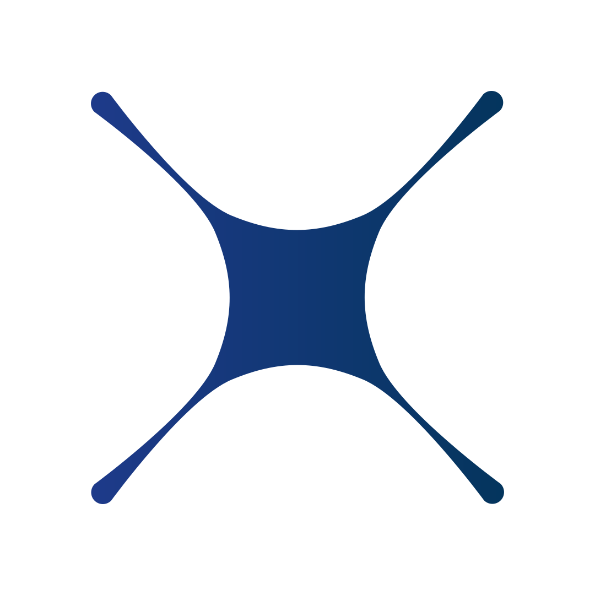
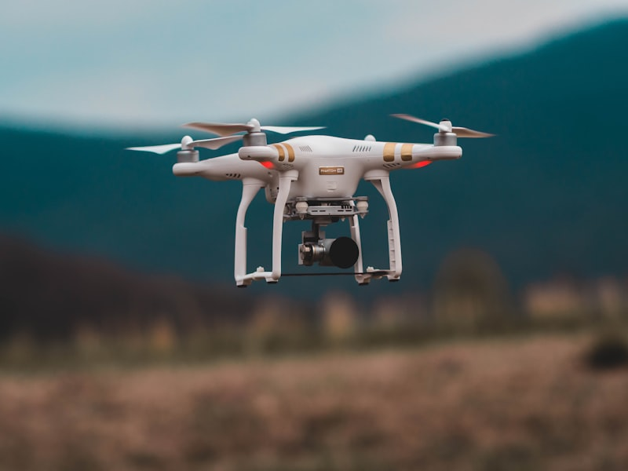

VLOS obligatoire
Vol en vue directe. Contact visuel continu avec le drone à tout moment.

Jour 1 Après-midi — Spécifique, Obligations & Premiers vols
Référentiel RS6982 — 3 jours / 24hLignes électriques — Distance Minimale d'Approche (DMA)
DMA 3 m — Lignes < 50 kV
DMA 5 m — Lignes ≥ 50 kV
Arc électrique — Peut se créer SANS contact direct
Normes RTE / Enedis — DLVR & DLVS
Les scénarios standard, le volume opérationnel et les procédures pour les opérations à risque modéré.
📄 Guide DSAC — Catégorie Spécifique (PDF)
Vol en vue directe. Contact visuel continu avec le drone à tout moment.
Vol en agglomération possible. Vitesse limitée à 5 m/s (18 km/h). Hauteur max 120 m.
Marquage de classe C5 requis. Système d'interruption de vol (Flight Termination System) indépendant.
Mise en place d'une zone d'exclusion des tiers. Système de récupération (parachute) pour limiter l'énergie à l'impact.
Vol hors vue directe. Distance maximale de 1 km en standard, extensible à 2 km avec observateurs de l'espace aérien.
Survol de zones résidentielles, commerciales ou récréatives interdit. Marquage de classe C6 obligatoire.
Retour vidéo en temps réel indispensable. Système d'interruption de vol (FTS) obligatoire.
Hauteur maximale de 120 m AGL. Vitesse maximale de 50 m/s (180 km/h). Conditions VMC requises.
Le volume opérationnel est l'espace total dans lequel le drone et ses zones de sécurité sont définis. Il se compose de 3 couches :
Géographie de vol
Espace VLOS autour du télépilote. Hauteur max 120 m AGL. Vitesse max 5 m/s (18 km/h).
Volume de contingence
Extension de minimum 10 m au-delà de la géographie de vol. Zone de récupération en cas de sortie.
GRB (Ground Risk Buffer)
Calculé selon l'altitude de vol et la masse du drone. Protège les tiers au sol en cas de chute depuis le volume de contingence.
Zone contrôlée au sol
Projection au sol du volume opérationnel + GRB. Matérialisation obligatoire (cônes, rubalise). Briefing + attestation signée.
En STS-01, le GRB est défini par des tableaux EASA basés sur la hauteur de vol et le poids du drone. L'exploitant doit s'assurer qu'aucun tiers non informé ne se trouve dans la zone contrôlée au sol.
Géographie de vol
Couloir BVLOS : 1 km (standard) ou 2 km avec observateurs. Hauteur max 120 m AGL. Visibilité min 5 km.
Volume de contingence
Extension de minimum 10 m au-delà. Zone où le télépilote applique les procédures d'urgence pour ramener le drone.
GRB — Spécifique STS-02
Pas de valeur fixe : le constructeur fournit la distance max de dérive après FTS (Flight Termination System). Le GRB est basé sur cette distance.
Zone contrôlée au sol
Sécurisation plus large qu'en STS-01. Observateurs nécessaires pour surveiller les limites. Aucun tiers non impliqué dans la zone.
En STS-02, le GRB dépend du drone utilisé : le constructeur indique dans le manuel la distance maximale de déplacement après activation du FTS. Cette approche est plus flexible mais exige une connaissance précise du matériel.
| Catégorie / Zone | Hauteur max | Distance latérale tiers | Zone tampon / contingence |
|---|---|---|---|
| A1 — drone < 250 g | 120 m AGL | Survol toléré (sauf rassemblements) | — |
| A2 — drone < 4 kg (C2) | 120 m AGL | 30 m (5 m mode basse vitesse) | — |
| A3 — drone < 25 kg | 120 m AGL | 150 m de zones résidentielles / commerciales / industrielles | — |
| Règle du 1:1 (cat. Ouverte VLOS) | — | ≥ hauteur de vol | Distance horizontale aux tiers ≥ hauteur |
| STS-01 — VLOS zone peuplée | 120 m AGL | Hors aire opérationnelle (zone matérialisée) | + Volume de contingence + GRB fixe (10 m) |
| STS-02 — BVLOS faiblement peuplé | 120 m AGL | Couloir 1 km (2 km avec observateurs) | + Volume de contingence + GRB variable (FTS constructeur) |
| Zones de protection aérodrome — code couleur cartes.gouv.fr | ||
|---|---|---|
| Rouge | Vol interdit | Zone très proche aérodrome / installations critiques |
| Orange foncé | 30 m max | Hauteur mesurée par rapport à l'altitude de la piste |
| Orange clair | 50 m max | Au-delà de 50 m → autorisation préalable obligatoire |
| Jaune | 60 m max | — |
| Jaune clair | 100 m max | — |
| Sans couleur | 120 m max | Plafond cat. Ouverte — au-dessus interdit |
* Sauf conditions particulières publiées à l'arrêté « espaces » du 3 décembre 2020. Hauteur dans les zones colorées mesurée par rapport au point le plus haut de la piste, pas au point de décollage.
Délimitation obligatoire avec cônes, rubalise ou panneaux. Empêcher l'accès aux tiers non impliqués.
Risques, consignes de sécurité et procédure d'urgence. Les personnes briefées doivent signer une attestation.
Termes précis (« Décollage », « Urgence », « Trafic »). L'observateur répète l'ordre pour confirmation.
Numéros d'urgence (112, 15, 18) à disposition. Trousse de secours et extincteur obligatoires sur site.
Le vol de nuit (entre la fin du crépuscule civil du soir et le début du crépuscule civil du matin) est interdit par défaut en catégorie Ouverte.
Le vol de nuit en cat. Ouverte est désormais possible sur dérogation préfectorale (demande préalable auprès de la préfecture du lieu de vol). Justification opérationnelle obligatoire.
Le drone doit être équipé d'un feu vert clignotant visible à 1 km au moins, permettant son identification de nuit.
En catégorie Spécifique (STS-01 / STS-02), le vol de nuit est autorisé sans dérogation supplémentaire, sous réserve du respect du scénario (hauteur, masse, équipement).
| PDRA | Type | Environnement | Description |
|---|---|---|---|
| G01 | VLOS | Peuplé | Alternative au STS-01 pour les drones sans marquage C5 |
| G02 | BVLOS | Faiblement peuplé | Alternative au STS-02 pour les drones sans marquage C6 |
| G03 | BVLOS | Faiblement peuplé | Inspection linéaire (lignes électriques, voies ferrées, pipelines) |
| S01 | VLOS | Faiblement peuplé | Agriculture avec drones lourds (épandage, pulvérisation) |
| S02 | BVLOS | Faiblement peuplé | Agriculture BVLOS avec drones lourds |
SORA = Specific Operations Risk Assessment — Méthodologie d'analyse des risques pour les opérations hors STS/PDRA (évalue GRC + ARC → niveau SAIL).
LUC = Light UAS Operator Certificate — Permet à un exploitant mature d'auto-autoriser ses propres opérations.
📄 Guide SORA (PDF) · 📄 Exemple PDRA-S01 (PDF)
Les démarches administratives et responsabilités de l'exploitant et du télépilote.
Avant tout vol en catégorie Spécifique. Validité : 24 mois (à renouveler).
Numéro d'exploitant européen (ex : FRA123456789). À apposer visiblement sur tous les drones.
Plaque d'identification lisible à l'oeil nu au sol (ou via QR code si drone trop petit).
Chaque télépilote doit disposer de son propre compte AlphaTango : il est nécessaire pour toute activité drone et pour la validation administrative en fin de formation.
Certificat d'Aptitude Théorique de Télépilote. Examen en centre DGAC obligatoire.
Délivrée par le centre de formation. Documents sur soi lors de chaque vol (CATS, attestation, pièce d'identité).
Enregistrement obligatoire sur AlphaTango pour tout drone de plus de 250 g ou équipé d'un capteur.
Plaque d'identification FRA visible. Signalement électronique Wi-Fi obligatoire pour les drones de plus de 800 g.
LiPo : fort taux de décharge, mais plus fragile. Li-Ion : meilleure autonomie, plus résistante aux cycles.
Risque d'endommagement irréversible des cellules. Prévoir le retour avant d'atteindre ce seuil.
Charger à température ambiante (15-25 °C). Stockage à 50 % dans un sac ignifugé.
Une batterie gonflée présente un risque d'incendie. Éliminer selon les normes environnementales en vigueur.

Mise en application des connaissances théoriques : check-lists, paramétrage et exercices de pilotage.
Bloc à moduler selon le temps disponible : si la théorie a pris l'après-midi, le premier vol à vue peut être reporté en début de J2 matin.
Hélices, batterie, carte SD, état général.
Météo, obstacles, zone de vol, tiers.
RTH, hauteur max, géo-fence.
Rôles, phraséologie, procédure d'urgence.
Altitude RTH (assez haute pour éviter les obstacles), point de retour (point de décollage ou position RC).
Configurer le plafond de vol. Définir l'action en cas de perte de signal : RTH, atterrissage ou stationnaire.
Calibration de la boussole (éloigner des structures métalliques). Calibration IMU sur surface plane.
Affichage tête haute : hauteur, distance, niveau batterie, force du signal, satellites GPS.
Maîtriser les bases du pilotage VLOS en conditions réelles.

Décollage vertical, stabilisation à 3 mètres de hauteur. Maintien de la position sans dérive.
Déplacement linéaire contrôlé sur chaque axe. Maintien de l'altitude et de la cap.
Figures combinées : carrés, huit. Coordination des sticks pour maintenir une trajectoire régulière.
Descente verticale contrôlée. Poser le drone sur une cible au sol définie (cercle de 1 m).
En catégorie Ouverte, la hauteur maximale de vol est mesurée par rapport à :
👆 Cliquez pour révéler la réponse
À partir de quelle masse le signalement électronique français est-il obligatoire ?
👆 Cliquez pour révéler la réponse
Quel est le délai de déclaration pour un vol professionnel sur espace public en zone peuplée (depuis 01/01/2026) ?
👆 Cliquez pour révéler la réponse
La Distance Minimale d'Approche (DMA) d'une ligne électrique ≥ 50 kV est de :
👆 Cliquez pour révéler la réponse
En STS-01, quelle est la taille minimale du volume de contingence au-delà de la géographie de vol ?
👆 Cliquez pour révéler la réponse
Quel drone nécessite à la fois le signalement FR et le Remote ID EU ?
👆 Cliquez pour révéler la réponse
Dans quel délai un événement de sécurité (CRESUS) doit-il être déclaré ?
👆 Cliquez pour révéler la réponse
Quelle est la validité du numéro d'exploitant FRA ?
👆 Cliquez pour révéler la réponse
En STS-02, quelle est la distance maximale de vol BVLOS avec observateurs ?
👆 Cliquez pour révéler la réponse
Ne jamais descendre en dessous de quel pourcentage de charge batterie ?
👆 Cliquez pour révéler la réponse
Rendez-vous sur